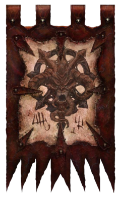
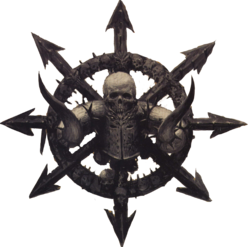
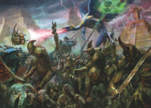

Демоны Хаоса, известные также как Легионы Хаоса, Архи-Враг, Великий Зверь или просто демоны – злонамеренные потусторонние сущности, рождённые самыми потаёнными и тёмными эмоциями и чувствами всех смертных существ. Из своих крепостей и дворцов во Владениях Хаоса эти сущности наблюдают завистливыми взглядами за владениями смертных, ожидая с нестихающим терпением своего шанса дать выход жажде разрушения, ужаснуть мир и взрастить щедрый урожай бед и невзгод.Демоны созданы из чистой мысли, они представляют собою воплощения чувств, которым их создателем предопределен смысл бытия. Они — ночной кошмар смертных, обретший жуткий облик; поток разрушительной силы, что бессчётно уничтожает цивилизации и истребляет целые армии храбрецов.Эти порождения бездны — овеществлённая тяга к распаду, все их действия направлены на гибель существующего миропорядка и замену его на собственное искажённое видение. Они взирают на земли известного мира из иной реальности, безустанно и жадно разыскивая то слабое место, что позволит им вторгнуться во владения смертных. Продвижение демонов Хаоса в материальной вселенной несёт с собою анархию, потерю осмысленности происходящего и неописуемое истребление.
Воины Хаоса, также известные как Орды Хаоса, Последователи Хаоса, северные варвары или просто северяне – общее название диких, воинственных людских племён варваров, которые населяют суровые и неумолимые северные земли, известные в землях Старого Света как ужасные Северные Пустоши. Для всех тех, кто сталкивался с ними, северные варвары считаются врагами всего мира, чьё непоколебимое поклонение пантеону злых и жестоких древних богов дало им один общий движущий мотив – возвестить неизбежное падение мира смертных и его порабощение силами Хаоса.
Великая Катастрофа, Пришествие Хаоса, Великий Катаклизм – первое, самое масштабное вторжение Хаоса в материальный мир, случившееся в середине 6-го тысячелетия до ИК.Демоны Хаоса разрушают мир на протяжении тысяч лет. Нет такого государства смертных, в чьих хрониках бы не было упоминания о столкновении с порождениями бездны. Города разорялись, царства гибли, но все бедствия меркнут перед ужасом величайшего вторжения Хаоса, когда силы тьмы впервые прорвались в реальность.Это случилось в эпоху таинственных Древних . Именно в те забытые времена демоны Хаоса впервые коснулись этого мира. Древние были архитекторами мироздания, пособными подчинять своей воле пространство и время, а также призывать грозные силы, используемые в виде разрушительных заклятий. Принесённые громадными кораблями, что могли за удар сердца преодолевать невообразимые расстояния, Древние странствовали и меняли мир по своей прихоти. Они стали причиной появления многих рас: сланнов, эльфов, гномов, людей, полуросликов и огров. Они навлекли на свои творения проклятье Хаоса, поскольку есть сущности, коих даже Древние не смогли подчинить.